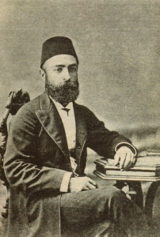

Mizancý Murad (1854-1917)

Tanzimat döneminin önemli fikir ve düþünce simalarýndan biridir. Gerçek ismi Mehmed Murad’týr. Gazetesi “Mizan”dan dolayý, “Mizancý Murad” olarak þöhret bulmuþtur. 1886 yýlýndan itibaren yayýmlamaya baþladýðý gazetesi ile ýlýmlý ve dengeli bir muhalefette bulunmuþ, meþveretin ehemmiyeti üzerinde durarak, meclisin açýlmasý gerektiðini savunmuþtur. Gerek II. Abdülhamid, gerekse Ýttihad ve Terakki döneminde savunduðu özgür ortamý bulamamýþ, takibata uðradýðý gibi gazetesi de sýk sýk kapatýlmýþtýr. Ferah tiyatrosunda verdiði konferans sabote edilip konuþmasýna engel olunurken, Bediüzzaman yardýmýna yetiþmiþ ve büyük bir olayýn meydana gelmesini önlemiþtir.Mehmed Murad, 1854 yýlýnda Daðýstan’da doðdu. Murad ismi, ailesi tarafýndan Daðýstan’ýn özgürlük savaþçýsý Hacý Murad’a atfen verilmiþtir. Ýlk öðrenimini memleketinde gördükten sonra, liseyi Sivastopol’da okudu. 1873’te Ýstanbul’a geldi. Bu sýrada Ýstanbul’da bulunan Daðýstanlý Þirvanizade Rüþtü Paþa’dan himaye gördü.
Mehmed Murad’ýn Rusça ve Fransýzca’yý bilmesi kolay bir þekilde iþe yerleþtirilmesine vesile oldu. Dýþiþleri Bakanlýðý Basýn-Yayýn Müþavirliðinde çalýþmaya baþladý. Burada çevirmenlik vazifesinde bulundu. 1877-1895 yýllarý arasýnda hukuk, mülkiye ve öðretmen okullarýnda tarih derslerini okuttu. Bu arada yöneticiliklerde de bulundu. Siyasi konularla ilgili olarak düzenli bir þekilde yazdýðý yazýlarýný Vakit ve Ýttihad gazetelerinde yayýmladý.
Mehmed Murad adeta adý ile özdeþleþmiþ olan “Mizan” Gazetesini 1886 yýlýndan itibaren yayýnlamaya baþladý. Gazetesinde yayýmladýðý yazýlarýnda hürriyet ve meþrutiyet üzerinde ehemmiyetle durdu. Ilýmlý bir biçimde yönetimi eleþtirirken yönetim ve muhalefetten yakýn ilgi bulamadýðý gibi, takibe alýnmasýna ve þiddetli bir þekilde baský görmesine sebep oldu. Mizancý Murad, dengeli ve yapýcý bir muhalefette bulunduðu halde sansüre uðradý. Savunduðu fikirler ve mevcut hükümetle anlaþamamasýndan dolayý gazetesi sýk sýk kapatýldý. Bir süre maruz kaldýðý baský ve saldýrýlara dayanýp direndi. Ancak, baskýlarýn giderek artmasý, gazetesinin sýk sýk kapatýlmasý nedeniyle, Ýstanbul’da özgür bir gazeteyi çýkarmanýn imkansýz hale geldiðini görerek ayrýlmaya karar verdi.
Sivastopol ve Viyana üzerinden Paris’e giden Mehmed Murad, sürgün veya çeþitli vesilelerle yurt dýþýnda bulunan Jön Türklerin içinde yer aldý. 1896-97 tarihleri arasýnda kýsa bir süre Ahmed Rýza’nýn yerine Ýttihat ve Terakki’nin baþýna geçti. Bir süre sonra sert ve ödünsüz kiþiliði ile ön palan çýkmýþ olan Ahmed Rýza, Ýttihat ve Terakki’den atýldý. Daha sonra örgütün merkezi de Cenevre’ye taþýndý. Akabinde gazetesini de burada yayýmlamaya devam etti. Gazetesi cemiyetin yayýn organý haline geldi. Ýçinde bulunduðu kesimle fikir ayrýlýðýna düþmesi üzerine buradan da ayrýlarak Mýsýr’a gitti. Hürriyet mücadelesini burada sürdürdü. Gazetesini burada da neþretti. Mýsýr’da yayýmladýðý bir makalesinde Sultan Abdülhamid’i tahttan ayrýlmaya davet ettiðinden dolayý idama mahkum edildi.
Mehmed Murad, Yurda dönmeden evvel Cenevre’de Ahmet Celaleddin Paþa ile görüþtü. Bu görüþmede meþrutiyetin ilaný ve meclisin açýlmasýnýn gereði üzerinde durdu. Fikri özgürlüðün saðlanmasý talebinde bulundu. Bu görüþme ile taraflar arasýnda bir yumuþama beklentisi hasýl oldu. Af ilan edilerek, yurt dýþýnda “zararlý” yayýnlarda bulunmuþ olanlarýn faaliyetlerine son verip yurda dönmeleri halinde af edilecekleri ve durumlarýna uygun bir iþe yerleþtirilecekleri, ayrýca, isteyenlerin yurt dýþýnda kalmaya devam edebilecekleri de ifade edildi. Osmanlý yönetimi tarafýndan reform yapýlacaðý vaatleri üzerine Ýstanbul’a geri döndü. Ancak, vaatler yerine getirilmediði gibi, uzun süre göz hapsinde de tutuldu. Yapýlan baskýlar, daha önceki dönemden geri kalmadý.
Mehmed Murad, 1899-1908 yýllarý arasýnda Þura-yý Devlet Maliye Dairesi azalýðýnda bulundu. Ýstanbul’a döndükten sonra devlet ile uzlaþma yollarýný aramasý mensubu bulunduðu Jön Türkler tarafýndan tepkiyle karþýlandý. 1908 yýlýnda bulunduðu görevinden ayrýlarak tekrar Mizan Gazetesini çýkarmaya baþladý. Bu tarihten itibaren Ýttihat ve Terrakki’nin muhalifi olan Ahrarlar içinde yer almasý, muhafazakar bir durumda görünmesi, dini konulardaki hassasiyeti ve Ýslami çizgiye kaymasýndan dolayý dýþlanmýþ ve hak etmediði þekilde bazý kesimler tarafýndan eleþtirilmiþtir.
Meþrutiyetin ikinci kez ilan edilmesinden sonra gazetesi Mizan’ý yeniden neþretmeye baþlayan Mehmed Murad, bu yeni dönemde de pek rahat edemedi. Yönetime ve Ýttihat Terakkiye olan muhalefetinden dolayý gördüðü baskýlar daha da artý. Daha önceki dönemde olduðu gibi, bu yeni dönemde de gazetesi kapatýldý ve muhtelif baskýlara maruz kaldý. 31 Mart hadisesinden sonra yargýlandýðý sýkýyönetim mahkemesi tarafýndan müebbet kalebentliðe mahkum edildi. Önce Rodos ve daha sonra Midilli adalarýna gönderildi. Bu sýrada on iki cilt olarak tasarladýðý, “Tarih-i ebülfaruk” adlý Osmanlý Tarihinin, Köprülüler bölümü dahil olan yedi ciltlik bölümünü yayýmladý. 1912 yýlýndaki genel aftan sonra Ýstanbul’a geldi.
Mehmed Murad Bey, bir ara Avrupa’ya tekrar gittiyse de kýsa bir süre sonra geri döndü. Ýttihad ve Terakki’ye olan muhalefetini devam ettirdi. Bazý gazete ve dergilerde makalelerini neþretmeyi sürdürdü. 15 Nisan 1917 tarihinde Ýstanbul’da vefat etti.
Mizancý Murad; ýlýmlý bir muhalif olarak, geleneksel siyasi düzen ile modern demokrasi ve fikir özgürlüðüne geçiþte köprü vazifesi görmüþ, yetiþen muhalif kuþaklarýn da öðretmeni olmuþtur.
Bir ara Duyun-u Umumiye Ýdaresi baþýnda da bulunan Mizancý Murad, iktisadi konularla ilgili olarak önemli fikirler ileri sürmüþ ve bazý orijinal görüþler ortaya koymuþtur. Kalkýnma konusuna deðinirken; tarým, sanayi ve ticaretin paralel olarak geliþtirilmesi gerektiðini belirtmiþ ve bunun gereðine inanmýþtýr. Geri kalmýþ Osmanlý ülkesinin kalkýnabilmesi için koruyucu bir dýþ ticaret politikasý izlenmesi gerektiði, ülke çýkarlarýnýn bunu zorunlu kýldýðý, yerli sanayinin gözetilmemesi halinde, Osmanlý Devletinin yakýn bir gelecekte “ecnebi pazarý” haline dönüþeceði uyarýsýnda bulunmuþtur. Ayrýca, hantal Yýldýz bürokrasisinden yakýnmýþ ve deðiþmesi gerektiðini savunmuþtur.
Dengeli bir fikir adamý olan, Ýttihad ve Terakki iktidarý döneminde de muhalefetini sürdüren Mizancý Murad’ýn, Þehzadebaþý Ferah Tiyatrosunda verdiði konferansýný sabote etmek ve konuþmasýna mani olmak için buraya gelen Ýttihatçýlarýn eylemi, Bediüzzaman Said Nursi’nin gayretleriyle boþa çýkarýlmýþtýr. Bu gurubun çýkardýðý gürültü ve kargaþa üzerine kürsüye çýkan Bediüzzaman, Mizancý Murad’a sahip çýkarak, “Hatibin sözünü kesmenin, meþrutiyet adabýna uymadýðý”ný belirtmiþ, bazý ellerin silaha sarýlmasýna kadar varan salondaki gerginliðin yatýþmasýna vesile olmuþtur.
Çok yönlü bir fikir adamý olan Mizancý Murad, hürriyetin tarifi ve sýnýrlarý konusunda Tanin yazarý olan Hüseyin Cahit ile tartýþmaya girmiþtir. Bu fikri münakaþada Mizancý Murad’ý destekleyen Bediüzzaman, onun haklý, Hüseyin Cahit’in ise haksýz olduðunu ifade etmiþ, ayrýca gerçek hürriyeti tarif ederken, “Tam ve mükemmel hürriyet, kiþinin firavunlaþmamasý ve baþkasýnýn hürriyeti ile alay etmemesidir. Þüphesiz, gaye haktýr; ama mücadele üslubu uygun deðildir” (Münazarat, s. 56) tespitinde bulunmuþtur.
Eserlerinden bazýlarý: Hürriyet Vadisinde Bir Pençe-i Ýstibdad Ýstanbul’da 1910 yýlýnda basýlmýþtýr. Enkaz-ý Ýstibdad Ýçinde Züðürdün Tesellisi adlý eseri 1913’te basýlmýþtýr. Tatlý Emeller, Acý Hakikatler ise 1914’te yayýmlanmýþtýr. Anýlarýný Mücahede-i Milliye adý altýnda neþretmiþtir. Bunlarýn dýþýnda eserler yazdýðý gibi bir çok makalesi de yayýmlanmýþtýr.